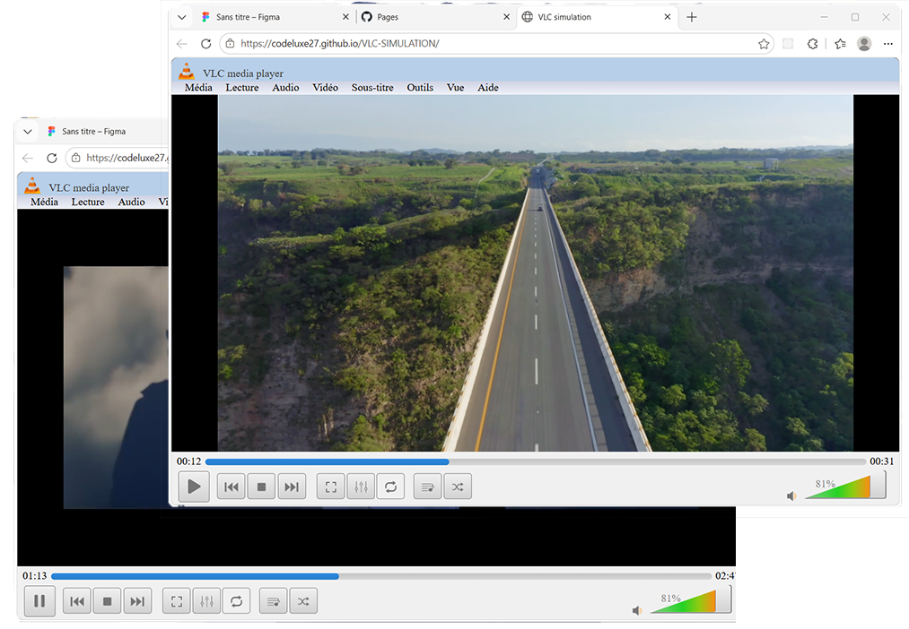

Quand VLC rencontre le Web
Cette démo est une reproduction interactive de VLC Media Player réalisée entièrement pour le web. Le projet simule l'interface, les animations et l'expérience utilisateur du célèbre lecteur multimédia afin d'explorer le design desktop moderne avec HTML, CSS et JavaScript. L'objectif était de recréer l'ambiance et le comportement visuel de VLC directement dans le navigateur, tout en gardant une interface fluide, responsive et fidèle à l'original.